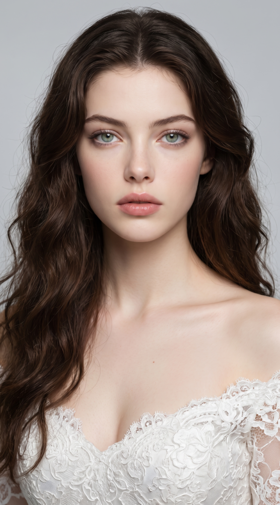
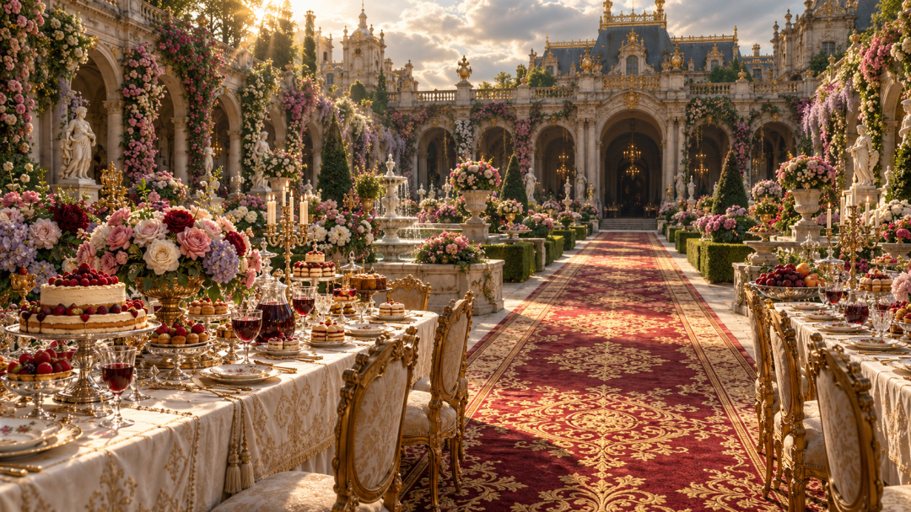
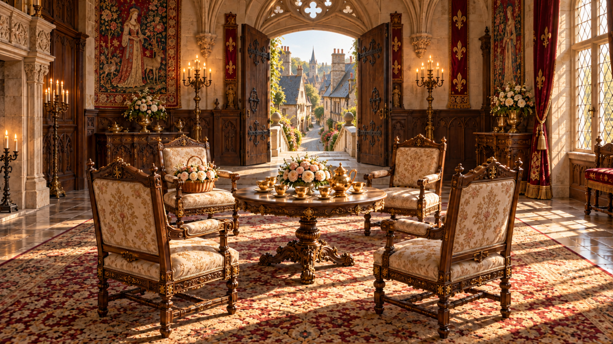
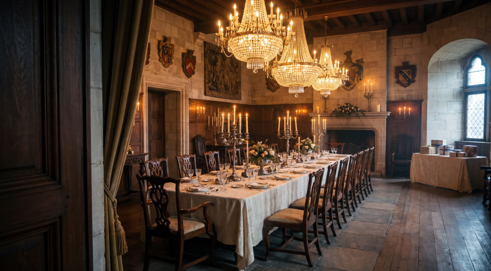
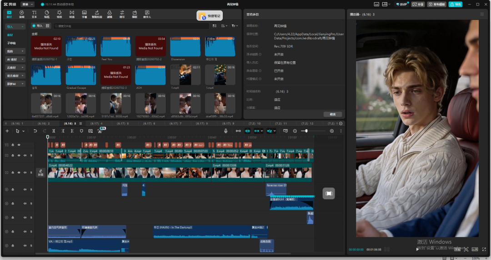
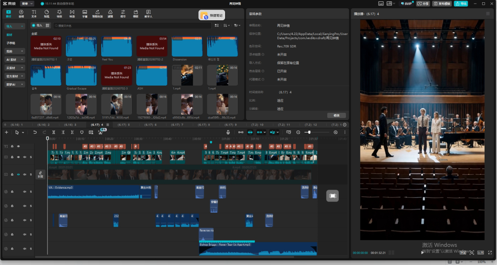
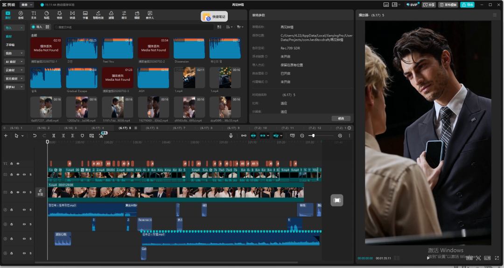

Workflow · Five Sheets
五张表 管住 一条链路
从接到剧本到交付成片，我用五张表把一部 AI 短剧的执行过程固定下来： 先把剧本拆成可拍的场次，再把人物与场景变成可复用的资产，用分镜表串起镜头与提示词，最后用质检表逐项验收。 下面是可以直接照着用的样表结构。
Sheet 01
剧本拆解表
把文字剧本拆成“可拍摄单元”：一集拆成若干场，每场标注时长、地点、人物与情绪走向，先定节奏，再谈画面。
| 集 / 场 | 时长 | 时间 · 地点 | 出场人物 | 剧情要点 | 情绪曲线 | 备注 |
|---|---|---|---|---|---|---|
| EP01 · S01 | 00:00–00:12 | 清晨 · 庄园马厩 | 男主、管家 | 男主驯服烈马，交代“谁都不服”的人设 | 压迫 → 掌控 | 开场钩子，必须 3 秒入戏 |
| EP01 · S02 | 00:12–00:35 | 白天 · 庄园正厅 | 男主、女主 | 女主一句话让男主当场收声，众人哗然 | 强势 → 反差 | 制造“怕老婆”反差名场面 |
| EP01 · S03 | 00:35–00:58 | 黄昏 · 长廊 | 男主、女主、女配 | 女配挑拨，男主第一次公开站队女主 | 试探 → 决断 | 情绪反转点 |
| EP01 · S04 | 00:58–01:20 | 夜 · 卧室 | 男主、女主 | 私下的“家宠”时刻，甜点落位 | 松弛 → 心动 | 结尾留钩，接下一集 |
Sheet 02
人物资产表
每个角色建立一份“可复现”的档案：外观关键词、服装套系、一致性锚点与参考图，保证跨镜头、跨集数都是同一张脸。
| 角色 | 身份 | 外观关键词 | 服装套系 | 一致性锚点 | 参考图 |
|---|---|---|---|---|---|
| 女主 | 驯兽师 / 庄园女主人 | 深棕短发、圆脸、杏眼、微小雀斑 | 工装衬衫 × 皮质背带 × 长靴 | 右侧眉尾小疤、银色手环常驻 | 三视图 · 4 张 |
| 男主 | 庄园继承人 | 深色卷发、高鼻、下颌线硬 | 丝质衬衫 × 深色马甲 × 黑金斗篷 | 左手旧伤疤、狼牙吊坠 | 三视图 · 4 张 |
| 女配 | 白月光 / 前任 | 金发、浅绿眼、身形纤细 | 香槟缎面礼服 × 珍珠耳坠 | 手持折扇、左耳单颗珍珠 | 三视图 · 3 张 |
| 管家 | 庄园老者 | 花白鬓角、微驼、圆框眼镜 | 深灰长礼服 × 白色手套 | 怀表链、袖口暗纹 | 三视图 · 3 张 |

Sheet 03
场景资产表
场景不是背景，而是光源与色彩的规范：同一场景固定时段、主光方向与主色，跨镜头才不会“飘”。
| 场景 | 时段 | 主光源 | 主色 / 辅色 | 陈设要点 | 复用镜头 |
|---|---|---|---|---|---|
| 庄园正厅 | 白天 | 左后侧高窗侧逆光 | 暖金 / 深棕 | 长桌、烛台、兽首壁挂、波斯地毯 | S02、S06、S11 |
| 马厩 | 清晨 | 门口低角度晨光 | 冷灰 / 干草黄 | 木栏、铁具、飘浮尘埃 | S01、S09 |
| 长廊 | 黄昏 | 尽头落日 + 廊柱切割光 | 橘金 / 暗红 | 拱窗、地毯、落地烛台 | S03、S13 |
| 卧室 | 夜 | 床头暖灯 + 窗外月光 | 琥珀 / 冷蓝 | 纱幔、壁炉、丝绒座椅 | S04、S12 |



Sheet 04
分镜执行表
分镜表是生成与实拍共用的一张表：镜号、景别、运镜、台词与提示词要点一一对应，哪一格空着，拍摄当天就会卡住。
| 镜号 | 景别 | 运镜 | 画面内容 | 台词 / 音效 | 时长 | 提示词要点 |
|---|---|---|---|---|---|---|
| 01-01 | 大远景 | 缓慢推进 | 晨雾中的庄园全景，马群掠过 | 环境声 + 马蹄 | 3.0s | 晨雾、逆光、体积光、胶片颗粒 |
| 01-02 | 中景 | 手持跟拍 | 男主翻身驯马，衣袖带风 | “都别过来。” | 2.5s | 动态模糊、马鬃飞扬、低机位 |
| 01-03 | 近景 | 固定 | 女主抬眼，众人噤声 | （静默）+ 心跳声 | 1.8s | 浅景深、眼神光、背景虚化人群 |
| 01-04 | 特写 | 微推 | 男主喉结滚动，欲言又止 | “听你的。” | 2.0s | 侧逆光、皮肤质感、浅景深 |
| 01-05 | 全景 | 横移 | 长廊两人并肩，仆人退开 | 弦乐推进 | 3.5s | 长廊透视、黄昏光束、尘埃粒子 |
Sheet 05
成片质检表
交付前的最后一道闸门：逐项对比分镜与成片，检查一致性、口型、字幕、声音与平台规格，不合格就回炉。
| 检查项 | 验收标准 | 结果 | 问题镜头 / 备注 |
|---|---|---|---|
| 人物一致性 | 同一角色跨镜头脸型、发型、服装无跳变 | 通过 | 01-07 发色偏亮，已重生成 |
| 场景一致性 | 同场景光源方向与主色统一 | 通过 | — |
| 口型 / 台词 | 口型与配音音节对齐，无明显拖帧 | 复检 | EP01 · S02 两句需微调 |
| 字幕规范 | 字号、描边、安全区符合平台要求 | 通过 | 9:16 安全区内 |
| 声音混音 | 人声 −6 dB，音乐不压台词 | 通过 | — |
| 平台规格 | 1080×1920 / 24 fps / H.264，首帧即钩子 | 通过 | 码率 8 Mbps |



© 2026 AI·DIRECTOR — AI 执行导演作品集
Workflow · Five Sheets